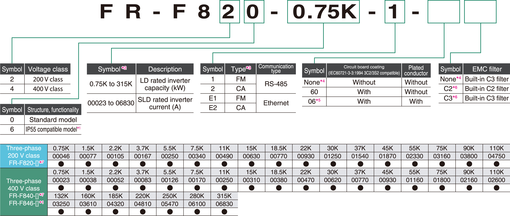
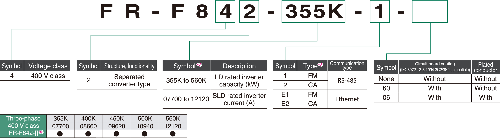
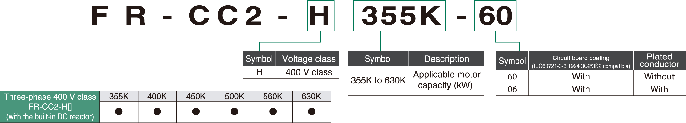
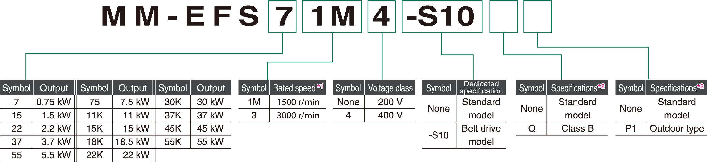
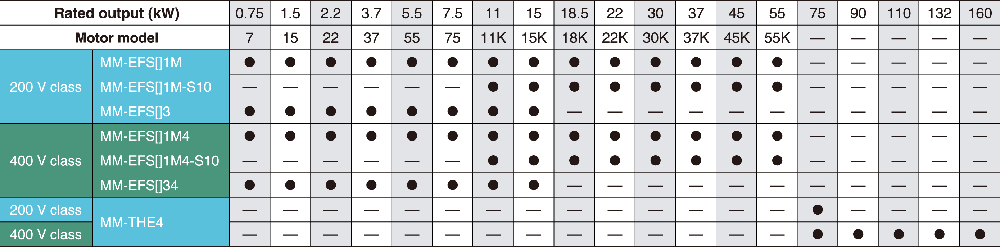

Inverters-FREQROL-F Series -FREQROL-F800- Konfigurasi Model

Beragam pilihan
Inverter
Model standar
●: Model yang dirilis

Jenis konverter terpisah
●: Model yang dirilis

- *1Berlaku untuk FR-F846-03610(160K) atau yang lebih rendah.
- *2Model dapat ditunjukkan dengan arus terukur inverter (peringkat SLD).
- *3Spesifikasi berbeda berdasarkan jenisnya sebagai berikut.
| Type | Monitor output | Initial setting | ||||
|---|---|---|---|---|---|---|
| Built-in EMC filter |
Control logic |
Rated frequency |
Pr.19 Base frequency voltage |
Pr.570 Multiple rating setting |
||
|
FM (terminal FM equipped model) |
Terminal FM (pulse train output) Terminal AM (analog voltage output (0 to ±10 VDC)) |
OFF | Sink logic |
60Hz |
9999 (same as the power supply voltage) |
1 (LD rating) |
|
CA (terminal CA equipped model) |
Terminal CA (analog current output (0 to 20 mADC)) Terminal AM (analog voltage output (0 to ±10 VDC)) |
ON | Source logic | 50Hz | 8888 (95% of the power supply voltage) |
0 (SLD rating) |
- *4Hanya berlaku untuk model standar.
- *5Tersedia untuk model yang kompatibel dengan IP55, FR-F820-00340 (7,5K) atau lebih tinggi, dan FR-F840-00170 (7,5K) atau lebih tinggi.
- *6Hanya berlaku untuk model yang kompatibel dengan IP55.
- *7Selalu pasang unit konverter (FR-CC2). (Tidak diperlukan saat konverter faktor daya tinggi (FR-HC2) digunakan) Untuk FR-F820-03160 (75K) atau lebih tinggi, dan FR-F840-01800 (75K) atau lebih tinggi, selalu sambungkan reaktor DC (FR-HEL), yang tersedia sebagai opsi.
Pilih reaktor DC sesuai dengan kapasitas motor yang digunakan. - *8Selalu pasang unit konverter (FR-CC2). (Tidak diperlukan saat konverter faktor daya tinggi (FR-HC2) digunakan)
Unit konverter
●: Model yang dirilis

Motor IPM efisiensi tinggi premium
55 kW atau lebih rendah
●: Model yang dirilis

- *1Motor ini juga dapat digunakan untuk aplikasi yang memerlukan kecepatan terukur 1800 r/min.
- *2Tipe luar ruangan dan kelas B adalah model semi-standar.
75 kW atau lebih tinggi
- Motor dapat digunakan untuk aplikasi yang memerlukan kecepatan terukur 1500 r/min dan 1800 r/min.
- Untuk motor khusus seperti tipe luar ruangan, tipe sumbu panjang, tipe flensa, tipe luar ruangan kedap air,
dan tipe antikarat, hubungi perwakilan penjualan Anda.
●: Model yang dirilis –: Tidak berlaku

Catatan:
- Motor IPM seri MM-EFS/MM-THE4 tidak dapat digerakkan oleh catu daya komersial.
- Untuk motor IPM, panjang kabel maksimum 100 m.
- Hanya satu motor IPM yang dapat dihubungkan ke inverter.
- Untuk aplikasi penggerak sabuk motor IPM seri MM-EFS 11 kW atau lebih tinggi dengan spesifikasi 1500 r/min, gunakan motor penggerak sabuk khusus.
Motor 11 kW atau lebih tinggi dengan spesifikasi 3000 r/min dirancang untuk koneksi langsung saja.